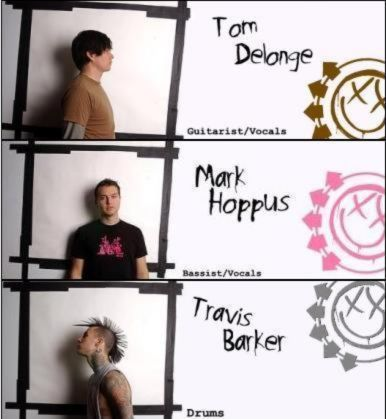

Blink182 dibentuk oleh Tom DeLonge (vokal dan gitar) dan Mark Hoppus (vokal dan bass). Setelah itu masuklah Scott Raynor sebagai drummer. Blink-182 sebelumnya dinamakan Blink, tetapi sudah ada grup musik beraliran pop asal Irlandia yang bernama Blink. Mereka pun menambahkan angka 182, yang diambil dari judul film Turk! 182.Pada tahun 1998, Scott keluar dari Blink-182 dan digantikan oleh Travis Barker.
Pilih Karakter Yang Dicari :